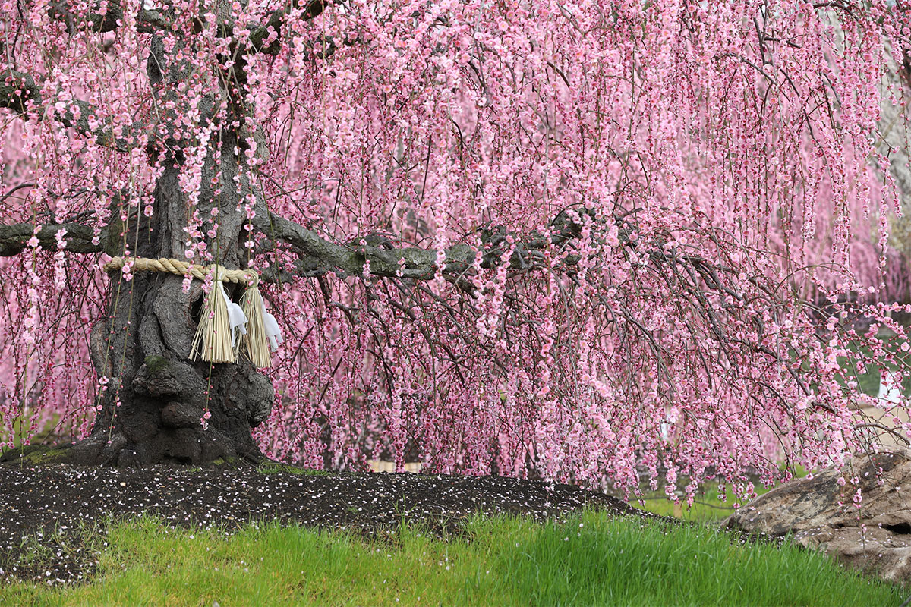
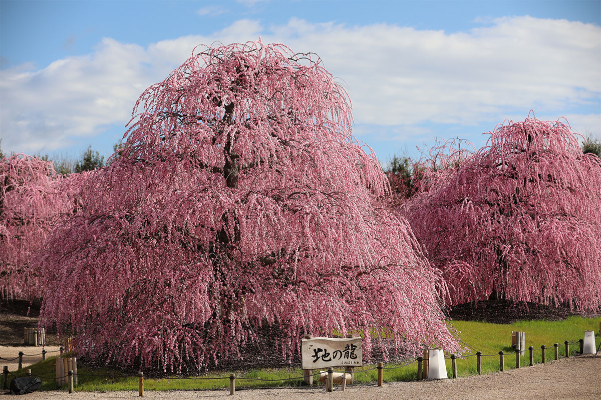
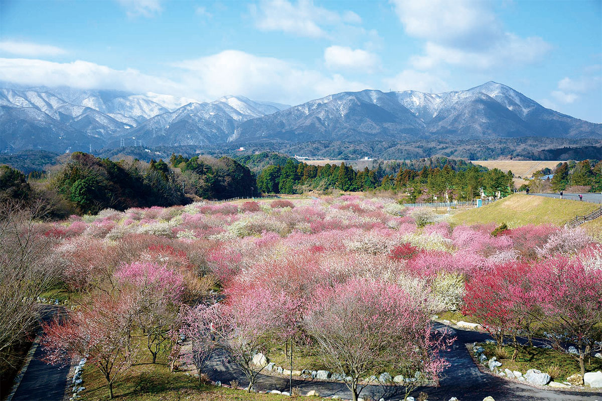
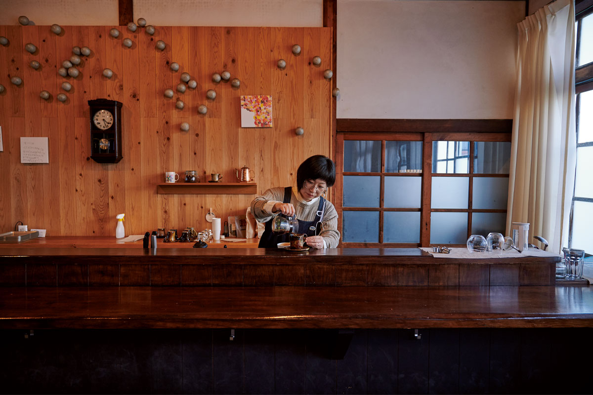
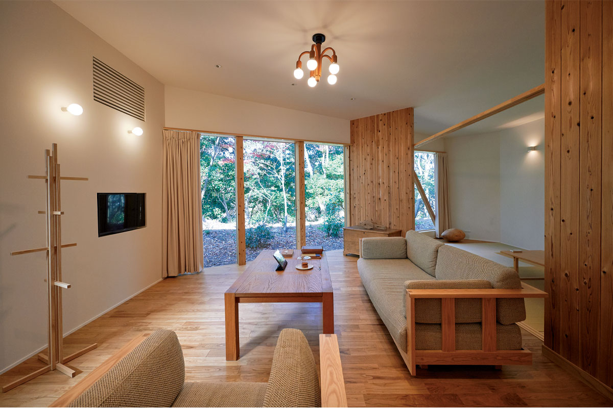

Префектура Миэ · Судзука и Инабэ · сады и святилища
Сливы Судзуки и Инабэ: плакучие деревья-драконы и долина в цвету у гор

Задолго до сакуры японцы встречали весну цветами сливы. На севере префектуры Миэ, у подножия гор Судзука, до сих пор растут одни из самых старых и ухоженных плакучих слив страны.
История
Когда весной цвела не сакура
Сегодня символ японской весны это сакура, но так было не всегда. Слива пришла в Японию из Китая около 1500 лет назад, сначала в виде «убай», копчёных и высушенных зелёных плодов, которые считались лекарством. В эпоху Хэйан (794–1185) ценились как лекарство и солёные сливы умэбоси, а в эпоху междоусобиц самураи брали их с собой в походы.
Цветы сливы любили не меньше плодов. В «Манъёсю», древнейшей антологии японской поэзии, сливе посвящено около 120 стихотворений: больше только о леспедеце, а о сакуре всего около 40. Слива переносит зимний холод, расцветает раньше сакуры и персика и наполняет воздух густым ароматом, поэтому её так ценили.
В антологии «Кокинсю» есть стихотворение о весенней ночи: тьма бессильна, она прячет цвет сливы, но спрятать её запах не может. В эпоху Эдо по мотивам этих строк кондитерский дом Toraya придумал сладость ёкан «Ёру-но умэ», «Ночная слива». Художник Хиросигэ Утагава изобразил в Эдо, нынешнем Токио, знаменитую сливу «гарюбай», похожую на прилёгшего дракона. Эту гравюру позже скопировал маслом Винсент Ван Гог. Слива стала узором для гербов, кимоно и фарфора и навсегда вошла в японское чувство прекрасного.
Слива, которая улетела к хозяину
В префектуре Миэ много сливовых садов, и с этими местами связана старая легенда. Её герой Митидзанэ Сугавара (845–903), учёный, поэт и сановник, которого сослали из столицы на далёкий Кюсю, в Дадзайфу. Сегодня его почитают как покровителя учёбы. В день отъезда он обратился к любимой сливе в своём саду со стихами: когда подует весенний восточный ветер, пошли мне свой аромат и не забывай весну, даже если хозяина нет рядом.
Предание говорит, что дерево так тосковало по хозяину, что за одну ночь перелетело к нему в Дадзайфу. Слива, конечно, летать не умеет, и считается, что кто-то взял от неё отросток и отвёз его ссыльному. Этим человеком называют Сиратаю, служителя святилища из провинции Исэ, нынешней Миэ. Он был предан Митидзанэ и доставил ему сливу вместе с письмом от жены.
Сад
Судзука-но мори: плакучие сливы как искусство
Одно из главных мест любования сливой в Миэ это сад Судзука-но мори в городе Судзука. Это опытное хозяйство питомника «Акацука». Сад открыли в 2014 году, чтобы сохранить красоту плакучих слив и передать следующим поколениям японское искусство формирования деревьев. Для посетителей он открыт только в сезон цветения, с конца февраля до конца марта.
Декоративных сортов сливы около 300, плодовых около 100. Плакучие сливы известны с конца эпохи Эдо, и только их насчитывают около 42 сортов. В центре сада растёт сорт «курэ-сидарэ», который цветёт здесь одним из первых крупными цветами, а вокруг пересажены знаменитые деревья со всей Японии.

Два самых старых дерева сада считаются старейшими плакучими сливами страны. Их зовут «Тэн-но рю», Небесный дракон, и «Ти-но рю», Земной дракон, и их стволы обвязаны соломенными верёвками симэнава, как священные деревья в святилищах. Плакучая слива красива, только если её ведут по опоре вверх и постоянно подрезают.
«Слива цветёт на молодых побегах, а сильнее всего растут верхние ветки. Если их не трогать, крона станет зонтом, свет не дойдёт до нижних ветвей, и они погибнут. Поэтому верх мы смело укорачиваем, середину чуть подрезаем и выравниваем форму. И так без остановки: стоит один раз бросить, и форма развалится»
сотрудник питомника «Акацука»
Выходит, эти деревья несколько поколений мастеров передавали из рук в руки вместе с умением их формировать. А сливы будто отвечают на заботу и цветут с удивительной силой. Перед ними хочется сложить ладони, как перед святыней.
Сад Судзука-но мори
- Адрес
- префектура Миэ, Судзука, Ямамото-тё, 151-2
- Телефон
- +81 59-371-1777
- Часы работы
- 8:00–16:00, в дни вечерней подсветки до 20:30
- Даты
- примерно с 20 февраля до конца марта, зависит от цветения
- Цены / Вход
- 700–1700 иен в зависимости от цветения
- Как добраться
- на машине около 5 минут от развязки Судзука скоростной дороги Хигаси-Мэйхан или от развязки у стоянки Судзука на дороге Син-Мэйсин
Парк
Инабэ: 4000 слив на фоне гор
Сливовый парк в городе Инабэ считается одним из крупнейших в регионе Токай. Это сельскохозяйственный парк, его открыли в 2001 году для встреч горожан с деревней. На его южной стороне растут около 4000 деревьев примерно 100 сортов, с белыми, бледно-розовыми и даже жёлтыми цветами.

Каждый март здесь проходит праздник сливы. Горы Судзука служат саду естественным фоном, и вид цветущих склонов под снежными вершинами впечатляет. За почвой и деревьями ухаживают местные жители, в основном пожилые, которых направляет городской центр занятости для людей старшего возраста. Сад, за которым смотрит вся округа, стал приметой весны в Инабэ, и ежегодно сюда приезжают около 80 000 человек.
Слива цветёт в холода, когда насекомых мало. Наверное, поэтому она раскрывает цветы не все сразу, а постепенно и надолго, чтобы пыльцу наверняка успели перенести. У этого дерева есть чему поучиться.
Сливовый парк Инабэ
- Адрес
- префектура Миэ, Инабэ, Фудзивара-тё, Канаэ, 717
- Телефон
- +81 594-46-8377
- Часы работы
- 9:00–16:00, во время праздника сливы с 8:00
- Даты
- праздник сливы примерно с начала до конца марта, зависит от цветения
- Выходные
- без выходных
- Цены / Вход
- 500 иен
- Как добраться
- на машине около 50 минут от развязки Кувана скоростной дороги Хигаси-Мэйхан
Рядом
Что ещё посмотреть вокруг
По Судзуке и Инабэ удобнее всего ездить на машине: места разбросаны у подножия гор.
Святилище Цубаки Оками-ясиро
Святилище Цубаки Оками-ясиро считается главным святилищем старинной провинции Исэ. Здесь почитают Сарутахико-но оками, бога, который указывает путь. В соседнем святилище Цубакикиси почитают его жену Амэ-но Удзумэ-но микото, покровительницу искусств и счастливых союзов. Весной на территории одна за другой распускаются несколько десятков сортов камелий и сасанквы. Рядом с малым святилищем есть водопад Канаэ, «исполняющий желания»: к нему приходят просить удачи в любви.
Святилище Цубаки Оками-ясиро
- Адрес
- префектура Миэ, Судзука, Ямамото-тё, 1871
- Телефон
- +81 59-371-1515
- Часы работы
- 5:00–18:00, с мая по октябрь до 19:00
- Цены / Вход
- в соседнем доме «Цубаки кайкан» (+81 59-371-1039, 8:30–17:00, без выходных) подают местное блюдо «цубаки торимэси», рис с курицей
Cafe Torinkan: здесь не разговаривают
Кафе устроено в здании бывшей начальной школы Агэки, которое внесено в реестр культурных ценностей страны. Общаются здесь без голоса: записками, жестами и на языке жестов. Подают кофе собственной обжарки и домашние пирожные, а в зале тихо и уютно, как в старой школе.

Cafe Torinkan
- Адрес
- префектура Миэ, Инабэ, Хокусэй-тё, Агэки, 1980
- Часы работы
- 13:00–16:00, последний заказ в 15:30
- Выходные
- понедельник, вторник, среда
Yunoyama Sosuikyo: гостиница о материалах
Дизайн и подбор искусства для этой гостиницы курировал известный керамист и скульптор. Она состоит из 12 вилл, и у каждой своя тема: камень, глина, дерево, стекло, лак. Во всех номерах есть горячий источник, вода которого поступает прямо из скважины. Ночь с ужином и завтраком стоила от 57 000 иен с налогом и сервисным сбором в 2021 году.

Yunoyama Sosuikyo
- Адрес
- префектура Миэ, уезд Миэ, Комоно, 4842-1
- Телефон
- +81 59-390-0068 (9:00–21:00)
- Цены / Вход
- ночь с ужином и завтраком от 57 000 иен, налог и сервисный сбор включены